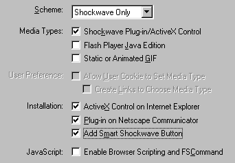

Creating a Flash site
When you have decided to make a Flash site, from the very beginning, there are a number of techniques, that help making the process easier. This tutorial will, yes, help you create a site, from the very first byte, to the last! This tutorial will be big, and will probably be edited often. NOTE: This is the standard way of making a Flash site, which almost all Flash sites use today. This is not the only way, but it is the most used way.
Start Page:
Shockwave Flash is not yet installed on all computers, so it is useful to have a startpage to detect Flash, and install Flash if necessary. Also, it should have an "enter site" button, which is only visible, if Shockwave is installed.
I recommend creating a Shockwave movie on the first page, because this will enable automatic install, if you follow the below instructions. Also, the movie (which should only be a simple button to enter the site) will only be visible, if Shockwave is installed.
Detecting Flash:
The best way to detect the Shockwave plugin, is using Aftershock. In Aftershock, the Enter-buttonmovie should have the following options:

If these options are checked,
the browser will react the following way:
Internet Explorer 3>: The browser will automatically install the plugin.
Page will load slower, but Shockwave will be installed when the download is
finished.
Netscape Navigator 4>: A popup window will appear, asking for permission
to install Shockwave. If the user grants permission, Shockwave will be installed.
Other browsers: The user will get access to a "Get Shockwave" button,
with Smart Shockwave, which will make the download and installation process
easy and fast.

Intro / preloader:
Usually, Flash sites have some kind of Intro, or if the site is big, a preloader, to demonstrate the potential of Flash. Click here if you want to know about preloaders. This intro, should end in the menu.
Menu:
The menu, or the interface, is the heart of your site. This menu can be created in a lot of different ways, with animated buttons, small movie clips, etc. Whatever way you create the menu, you will end up with a series of buttons, that link to other sections of the site. I recommend a transition to these. This section, maybe along with the intro / preloader, should have a seperate scene.
Transition to menu topics:
The transition to other sections of your site, can be anything. It can even be a small intro to that section. Whatever the way you create, it will end up in the section of your site, which you linked from the main menu. The transition to this topic, the topic, and the transition back, should have a seperat scene.
Section of a site:
In this section, you have the content, you linked to from the main menu. It can be a new sub menu, a number of buttons, some text, an animation, a "Go Back" button or a combination of these. I recommend the following Flash commands: Open a new browser window, and Load Movie. Load movie, can load a new movie on top of your main site, which is useful if your site contents are also made in Flash.
Back button and transition back:
Much like the transition to the section of a site, this is a transition back to the main menu.
Misc. tips.
Music on/off button:
Visit these topics: Tell Target, Load Movie.
Skip button:
A skip button is useful if you have many animations or transitions in your site. Read the topic.
Load Movie / Open browser window:
If your site will contain
no HTML at all (except the start page) i recommend that you use Load
Movie. This way, you will not need to create another scene, just for your
contents. You simply make a new movie, and "place" it "above"
the other.
If your site WILL contain HTML, i recommend that you either create a frameset,
with Flash in one frame an HTML in the other, or open
a new browser window, to display the HTML content.